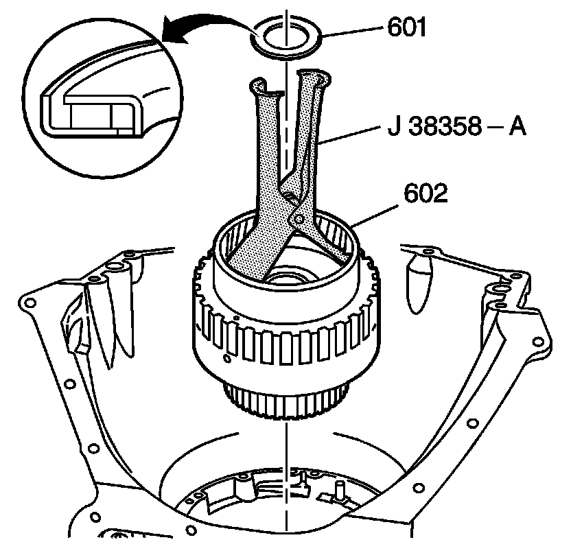

Forward Clutch Assembly Installation
Forward Clutch Assembly Installation
Tools Required
^ J 36850 Transjel(R) Lubricant
^ J 38358-A Forward Clutch Assembly Remover/Installer

1. Align the direct clutch plates in order to aid in the installation of the forward clutch housing assembly (602).
Important: Following installation of the forward clutch housing assembly (602), the distance between the top of the speed sensor ring and the pump gasket surface should be approximately 98-99 mm (3.85-3.89 in).
2. Using the J 38358-A, install the forward clutch housing assembly (602).
3. Install the overdrive carrier/forward clutch thrust bearing assembly (601) (silver side up) onto the forward clutch housing assembly (602). Retain with J 36850 or equivalent.